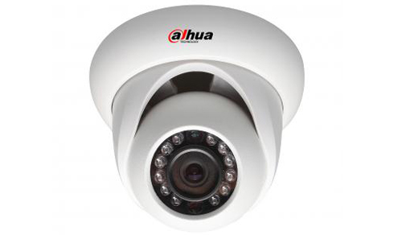
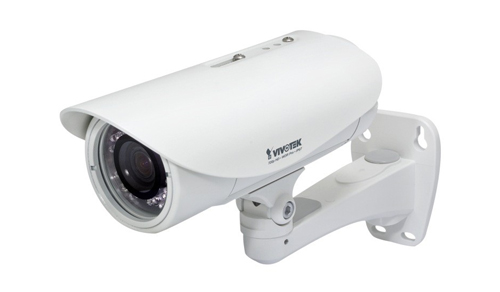
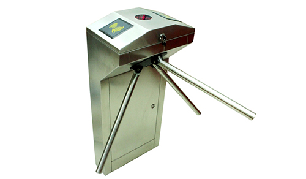
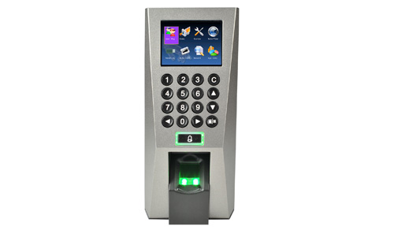

-

Venta de cámaras CCTV-IPCCTV, control de acceso y asistencia. Y desarrollo de software a medida.
-

CCTV Analógico Circuito cerrado de televisión, es un sistema de transmisión de video de vigilancia durante las 24h del día.
-

IPCCTV La video vigilancia IP es el monitoreo de la conducta y las actividades de personas en alta resolución o HD.
-

Control de acceso Toda empresa u organización tiene sectores donde ciertas personas pueden ingresar: Establecer y controlar estos accesos puede ser dificultoso a menos que se cuente con un dispositivo electrónico.
-

Control de asistencia Los relojes biométricos inteligente capturan la información; pero el software es el responsable de recibir el dato y procesarlo.
CCTV
El Circuito Cerrado de Televisión es una tecnología de videovigilancia diseñada para supervisar una diversidad de ambientes y actividades.
Se le denomina circuito cerrado ya que, al contrario de lo que pasa con la difusión, todos sus componentes están enlazados. Además, a diferencia de la televisión convencional, este es un sistema pensado para un número limitado de espectadores.
Un sistema de CCTV IP es un sistema de televisión de circuito cerrado de protocolo de Internet; emplea tecnología avanzada para actualizar el concepto básico de un sistema de vigilancia interna. Mientras que los sistemas anteriores se basaron en señales analógicas enviadas a dispositivos de VCR, el sistema de IP elimina la necesidad de una conexión física a un monitor o grabadora.